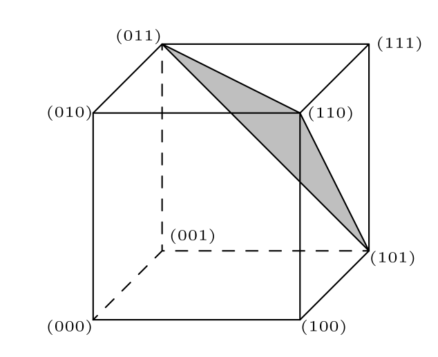
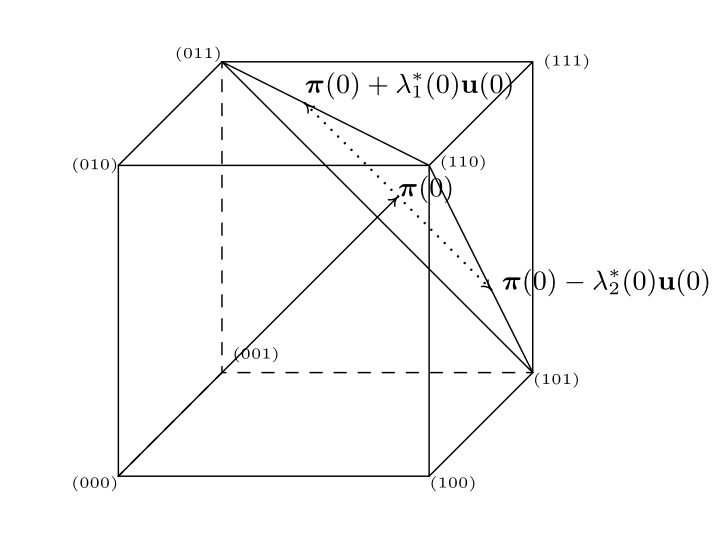

Shukry Zablah
Advisor: Matteo Riondato
March 2, 2020
\(\left\{u_{1}, \dots, u_{k}, \dots, u_{N}\right\}\)
\(U=\{1, \ldots, k, \ldots, N\}\)
Study a variable y taking value yk for unit k.
\(T=f\left(y_{1} \cdots y_{k} \cdots y_{N}\right)\)
We have \(p\) known variables for every unit in the population.
\(\mathbf{x}_{k}=\left(\begin{array}{lllll}x_{k 1} & \cdots & x_{k j} & \cdots & x_{k p}\end{array}\right)^{\prime}\)
\(\mathbf{s}=\left(\begin{array}{lllll}s_{1} & \cdots & s_{k} & \cdots & s_{N}\end{array}\right)^{\prime} \in\{0,1\}^{N}\)
A support is a set of samples denoted by \(\mathcal{Q}\)
Symmetric support w/o replacement: \(\mathcal{S}=\{0,1\}^{N}\)
A sampling design is a multivariate probability distribution on \(\mathcal{Q}\)
\(\sum_{\mathbf{s} \in \mathcal{Q}} p(\mathbf{s})=1\)
The probability that unit k is in the random sample.
An estimator for the total (or mean) that takes into consideration unequal inclusion probabilities.
A sampling design such that the set of possible samples is restricted by our estimate of the known totals.
\(\mathcal{Q}=\left\{\mathbf{s} \in \mathcal{S} | \sum_{k \in U} \frac{\mathbf{x}_{k} s_{k}}{\pi_{k}}=\mathbf{X}\right\}\)
\(\operatorname{var}\left(\hat{\mathbf{X}}_{H T}\right)=0\)

Deville, Tille 2004
sample = cube(X, pi)
The cube method is a random walk on the constraint space to a vertex.

\(\pi=\left(\begin{array}{l}1 / 9 \\ 2 / 9 \\ 3 / 9 \\ 4 / 9 \\ 5 / 9 \\ 6 / 9 \\ 7 / 9 \\ 8 / 9\end{array}\right), \mathbf{X}=\left(\begin{array}{l}0 & 1 \\ 0 & 2 \\ 1 & 3 \\ 1 & 4 \\ 1 & 5 \\ 1 & 6 \\ 0 & 7 \\ 0 & 8\end{array}\right)\)
\(\pi=\left(\begin{array}{l}1 / 9 \\ 2 / 9 \\ 3 / 9 \\ 4 / 9 \\ 5 / 9 \\ 6 / 9 \\ 7 / 9 \\ 8 / 9\end{array}\right), \mathbf{X}=\left(\begin{array}{l}1 / 9 & 1 \\ 2 / 9 & 1 \\ 3 / 9 & 1 \\ 4 / 9 & 1 \\ 5 / 9 & 1 \\ 6 / 9 & 1 \\ 7 / 9 & 1 \\ 8 / 9 & 1\end{array}\right)\)
Chauvet 2006: A Fast Algorithm for Balanced Sampling
Chauvet 2009: Stratified Balanced Sampling
Hasler, Tille 2013: Fast Balanced Sampling for Highly Stratified Populations
\(\boldsymbol{\mu}=\mathrm{E}(\mathbf{S})=\sum_{\mathbf{s} \in \mathcal{Q}} p(\mathbf{s}) \mathbf{s}\)
\(\sum_{k \in U} \mu_{k}=\mathrm{E}[n(\mathbf{S})]\)
And in our setting: \(\pi=\mu\)
The HT estimator is an unbiased estimator that works for sampling with or without replacement and with unequal inclusion probabilities.
\(\widehat{Y}_{H T}=\sum_{k \in U} \frac{S_{k} y_{k}}{\pi_{k}}\)
If \(\pi_k = n / N\) for every \(k\) (SRS), then the estimator becomes \(N\bar{y}\)
Inclusion probabilities are chosen either by necessity or to lower the variance of our estimator of Y (e.g. proportional to some auxiliary variable).